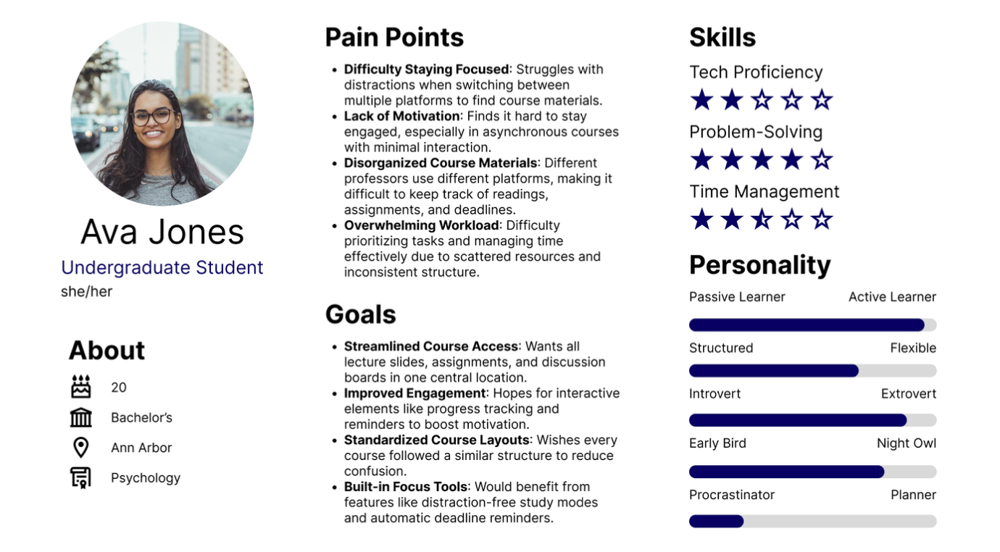
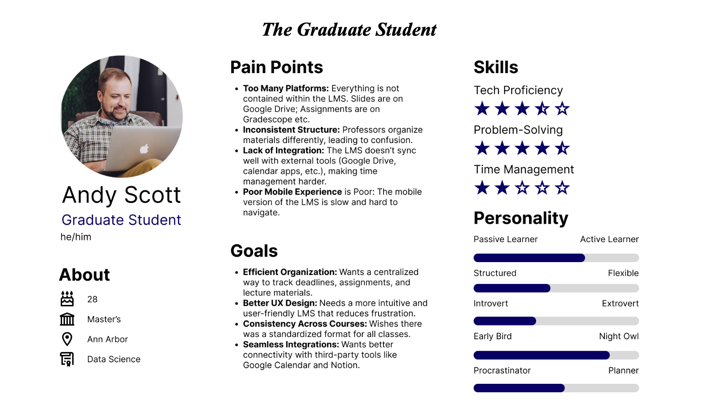
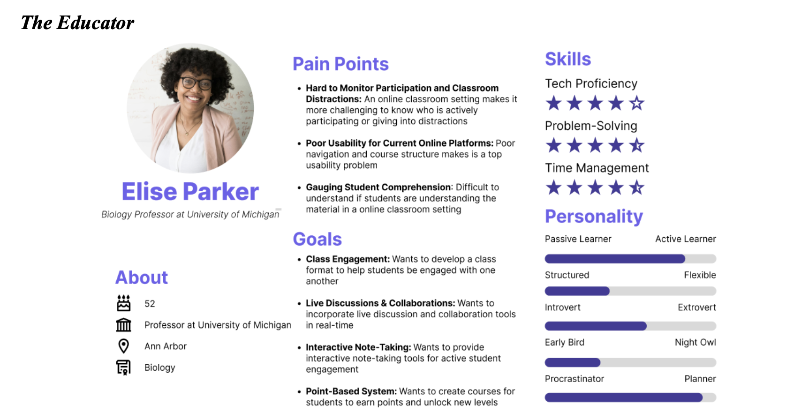
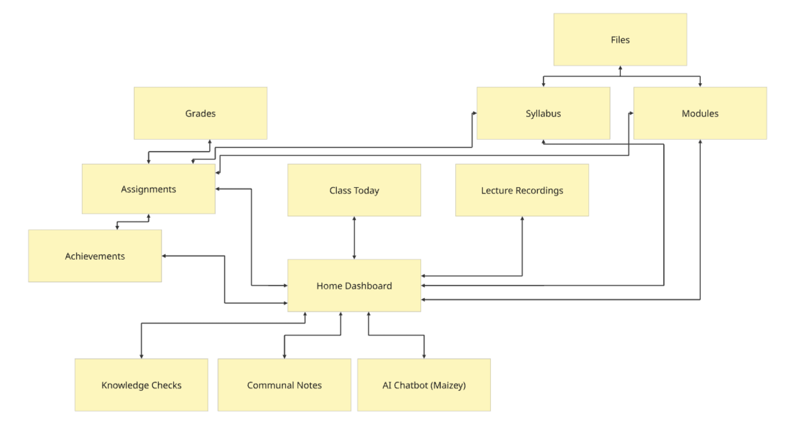

Undergraduate students
Needed fewer distractions, a clear view of deadlines, and straightforward access to materials without switching among several platforms.
An Integrated Digital Learning Hub that brings course materials, live lectures, assignments, and collaboration into one experience. Our graduate team used research with 77 students and educators to guide the concept and build an interactive prototype.

This was an academic design project for SI 699 at the University of Michigan. We focused on the experience of students and educators using remote and hybrid learning platforms, particularly the friction of moving between course-management, assignment, and video-conferencing tools.
For students, finding a lecture, checking an assignment, and asking for help could require several separate systems. For instructors, delivering the class and understanding whether students were participating could also happen in different places. Our question was how to organize those activities into a clearer, more connected learning experience.
I worked with Loren Berry, Tim Michowski, and Emily Sulkey on the research and prototype for this graduate team project. The case study presents our shared research, design rationale, and final demonstration.
We moved from a broad problem in online learning to a specific product concept: a central course hub with direct access to the tasks students use most, plus tools for interaction and progress feedback.
We surveyed 77 current and past students and educators using multiple-choice and open-ended questions. Recruitment used university-related channels including Slack, Discord, and Reddit. The survey asked about challenges with remote learning, desired features, and problems with navigation and performance.
Three themes shaped the concept: limited engagement, fragmentation across tools, and usability barriers. Students described scattered materials and difficulty keeping track of work. Educators wanted ways to see participation and comprehension while supporting more interaction.
Needed fewer distractions, a clear view of deadlines, and straightforward access to materials without switching among several platforms.
Wanted an efficient way to organize coursework, locate lecture materials, and find consistent information across classes.
Needed visibility into student understanding, live discussion tools, and ways to structure material and provide feedback.
We translated the survey themes into three personas. Each connected a type of learner or educator to specific goals, needs, and pain points. These helped us consider the experience beyond a single student workflow.



Our team reviewed Canvas, Blackboard, GradeCraft, and Google Classroom. We looked at how those systems approached course organization, integration, interaction, and motivation. That review helped us frame the hub around connected course tasks and selective engagement features.
The survey informed the design direction. It was not a usability test of the final prototype and does not establish that the concept improved learning outcomes.
The home screen organizes the learning experience around a course. Students can access lectures, modules, recordings, the syllabus, grades, and achievements from a consistent starting point.
This responds to the recurring problem of searching across disconnected platforms. We gave important course resources direct entry points, including the syllabus, instead of relying on users to discover them inside a file hierarchy.
Class Today brings the live-lecture experience together with interaction concepts such as communal notes, a whiteboard, and knowledge checks. Educators can ask questions while students are already in the learning environment.
Shared notes were designed to be accessible from both the home screen and the live-class experience. That connects preparation, participation, and review without treating each as a separate product.
Assignments and grades bring together upcoming work, completed submissions, and feedback. The achievements concept adds visual recognition and course progress, while modules can unlock as work is completed.
For the leaderboard concept, students would see their own position while peers remained anonymous. Motivation was a design hypothesis to investigate; the prototype did not establish that competition or rewards would help every learner.
Our Aristotle AI concept explored a course-specific assistant that could answer questions, point to relevant content, and support studying. We presented the intended help experience as a simulation.
The final project did not include a trained or connected AI system. Before implementing that feature, we would need to test answer quality, source attribution, and when students should be directed to an instructor.
Our information architecture connected the dashboard to the course tools and mapped relationships among assignments, grades, modules, notes, and help.

Start from the home screen and explore the linked course tools. The prototype demonstrates selected flows; some screens and actions are simulated. On a small screen, use the fullscreen control for a larger view.
If the prototype does not load, open it in Figma ↗ or watch the walkthrough below.
We scoped the project around a demonstrable student journey. The final report distinguished the intended experience from the functionality that would require a production backend, live integrations, or more time.
For example, the knowledge-check demonstration returned a fixed result, and its leaderboard used sample data. Those interactions showed the intended feedback loop; they were not a functioning assessment system.
The project produced a survey-informed problem definition, three personas, a mapped information architecture, an interactive prototype, a demonstration, and a final report. Together, those deliverables made the proposed learning experience concrete enough to review and test.
Our main design contribution was connecting tasks that had been fragmented across platforms: finding the next lesson, accessing materials, participating in class, checking work, and getting help. The outcome was a product concept and prototype, with engagement and usability improvements still to be validated.
I would narrow the next build to the core student journey and test whether people can find their next class, locate an assignment, and understand progress without help. I would also bring mobile usability and accessibility checks into that work earlier, then evaluate the instructor experience separately.
The project reinforced the need to balance the student’s desire for simplicity with the educator’s need for feedback. Adding features only helps when the relationships among those features make the main tasks easier to complete.
{kind=link}
{kind=link}
{kind=link}